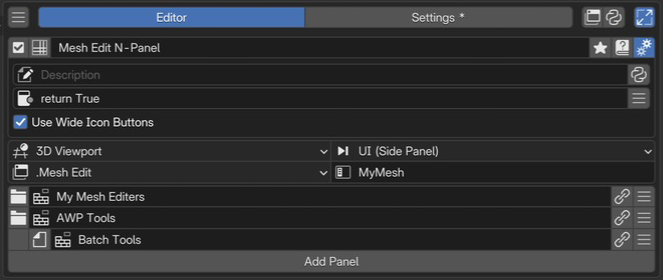

Side Panel Editor¶
Side Panel は、PME の Popup Dialog や既存の Blender パネルを、指定したエディターのサイドバーやヘッダーに配置するエディターです。中身を作る設定と、どこに並べるかの設定を分けて管理できます。
このページは PME 2.1 の設定を対象にしています。
構成ガイド — 機能・組み合わせ・活用例（AI 向け）
呼び名：Side Panel／種別 ID：PANEL。
Popup Dialog の中身、または Blender のパネルを常設の UI として並べます。
入力：Add Panel から追加する Popup Dialog の参照、または Blender のパネル ID。一行に一つのパネルを配置します。通常の Command / Custom のタブへコードを書くエディターではありません。
配置：Space / Region / Context / Category を選びます。タブ名は Category で、PME のメニュー名とは別です。配置設定へ。
構造：通常パネルと、その直前の通常パネルに属する Sub-Panel を並べます。パネル一覧へ。
組み合わせ：まず Popup Dialog 側でボタンを作り、このエディターで表示先を指定します。既存パネルを移してまとめる場合は、元の表示を Hiding Unused Panels で隠す構成も使えます。
制約：配置を変えても、内部の操作が必要とする Blender のコンテキストは消えません。元のパネルを別のエディターへ置く場合は、値・オペレーター・表示条件を確認します。
設計例：モデリング用の Popup Dialog を3D Viewportの同じCategoryへ集め、必要に応じてSub-Panelで折りたたむ。活用例へ。
確認：対象エディターとリージョンで表示し、グループの有効／無効、子パネル、実際のボタン操作を試します。
画面と編集の流れ¶

1名前と基本操作サイドパネル構成の名前と有効状態を確認します。 2Advanced settings説明と利用条件、アイコンボタンの幅を設定します。 3表示先とカテゴリ表示するエディター、領域、コンテキストとカテゴリを指定します。 4パネルと親子関係表示するパネルを並べます。この例は子パネルも含みます。一覧で Side Panel を選び、右側で配置先を設定してから Add Panel で中身を参照します。 メニュー一覧の操作は エディターの共通要素を参照してください。
名前と基本操作¶
メニュー名は PME 内でこのパネル構成を識別する名前です。N-Panel のタブ名は下の Category で別に設定します。 有効にすると配置先へ登録し、無効にするとこの構成のパネルを取り外します。 名前・タグ・参照元などは 選択メニューの設定 を参照してください。 この種別には Hotkey 設定とプレビューはありません。
配置設定（Space / Region / Context / Category）¶
項目 |
役割 |
|---|---|
Space |
配置する Blender エディター |
Region |
エディター内の配置先。N-Panel には UI (Side Panel) を使う |
Context |
Blender パネルのコンテキストによる絞り込み。表示先が対応する値を選ぶ |
Category |
サイドバーのタブ名。同じ配置先・Category のパネルは同じタブに並ぶ |
Context は C.mode の値をそのまま入力する欄ではありません。候補は Blender に登録されたパネルのコンテキストから作られます。
特定のモードや選択状態を判定したい場合は Poll を使います。
Region が Header の場合、Context / Category の入力欄は表示されません。
パネル一覧¶
Add Panel から、PME の Popup Dialog または既存の Blender パネルを選びます。 Popup Dialog のボタンやプロパティは参照先で編集し、ここではパネルのラベル、配置順、親子関係を設定します。
操作 |
役割 |
|---|---|
左のパネル／フォルダーのアイコン |
通常パネルと Sub-Panel を切り替える |
ラベル |
配置したパネルの表示名を編集する |
参照先を開くボタン |
対応する Popup Dialog の編集へ移る |
行の操作メニュー |
Sub-Panel、Add Panel、Move Panel、Remove |
Sub-Panel¶
先頭以外の行を Sub-Panel にすると、その上にある最も近い通常パネルの子になります。 通常パネルを新しく置くと、それ以降の Sub-Panel はそのパネルの子になります。 先頭行は Sub-Panel にできません。この構成で表せるのは通常パネルとその子の一階層で、 Sub-Panel の下へさらに子を作る指定ではありません。
flowchart TD
A["Category: My Tools"] --> B["通常パネル: Modeling"]
B --> C["Sub-Panel: Selection"]
B --> D["Sub-Panel: Modifiers"]
A --> E["通常パネル: View"]
親と子の展開状態や表示は、実際の配置先で確認してください。
Advanced settings（詳細設定）¶
歯車から開きます。Description と Poll は 共通の詳細設定 を参照してください。 Poll では、このパネル構成を使えるコンテキストを判定します。
Use Wide Icon Buttons は、アイコンだけのボタンを幅のあるボタンとして配置する設定です。 アイコン画像そのものを横に引き伸ばす機能ではありません。
活用例と確認する条件¶
自分用 N-Panel タブを作る¶
Popup Dialog を用意し、Side Panel の Space を 3D View、Region を UI (Side Panel)、 Category を目的のタブ名にします。Add Panel で Popup Dialog を追加し、3D Viewport のサイドバーを開いて確認します。 複数の Side Panel を同じ Category へ置く場合は、同じ名前のタブの中に並びます。
ヘッダーにボタン群を置く¶
Region を Header にし、ボタン群を作った Popup Dialog を参照します。 ヘッダーは横方向の限られた領域なので、表示量を絞り、幅が狭い場合も確認します。 Context / Category によるタブ配置とは使い分けます。
モードや状態で表示を切り替える¶
Poll に表示条件を書きます。たとえばアクティブなオブジェクトがあるか、Mesh Edit Mode かなどを判定します。 パネルが表示されることだけでなく、中のオペレーターがその場所で実行できることも確認します。
既存のパネルをまとめる¶
Add Panel の Blender パネル選択や Interactive Panels から取り込めます。 既存パネルの表示先だけを変えた場合、そのパネルが元のエディターから読む値や条件が不足することがあります。 最初は一つずつ追加し、値の表示と編集を確かめます。
関連ページ¶
参考動画（原作者のチャンネル）¶
参考動画（旧版） — 原作者 roaoao のチャンネル